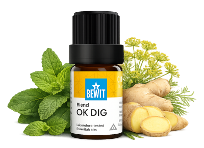

Trávení odráží, jak se cítíme celkově — fyzicky i emočně. Esence mohou být jemnou, ale účinnou podporou na cestě k lehčímu a spokojenějšímu tělu. Naslouchejte mu a dopřejte mu, co potřebuje. Výsledky přicházejí s pravidelností — dopřejte si čas.

pro lehkost a pohodu
Když máte potíže s trávením, nadýmáním nebo pocitem těžkosti. Ukáži vám, jak přirozeně podpořit zdravé trávení a vrátit tělu pocit lehkosti.
Trávení

Komplexní směs, která je přirozenou oporou při trávicích potížích — ať už jde o nevolnost, pálení žáhy, říhání, nadýmání nebo těžkost po jídle.
Harmonizuje celý trávicí proces přirozeně a jemně.
💧 Jak použít: 1 kapku zředěnou v nosném oleji (např. jojobový) naneste na břicho krouživými pohyby po směru hodinových ručiček, nebo kápni do dlaní a zhluboka dýchej — opakujte 3× denně. Anebo přidejte 3–5 kapek do difuzéru.
Zjistit více →💡 Chcete ještě pohodlnější variantu? OK Dig Roll-on — již namíchaný a připravený k použití, stačí nanést.
💧 Jak použít: Naneste trochu nosného oleje na oblast břicha nebo chodidla, přidejte 1 kapku a rozetřete — opakujte 3× denně. Nebo přidejte 3–5 kapek do difuzéru, případně do koupele se lžící smetany nebo tekutého mýdla.
Chci zdravá střeva💡 Také jako Coldet Roll-on — namíchaný, připravený k použití.
💧 Jak použít: Naneste trochu nosného oleje na oblast žaludku nebo břicha, přidejte 1 kapku a jemně rozetřete — opakujte 3× denně. Nebo přidejte 3–5 kapek do difuzéru.
Chci ulevit žaludku💧 Jak použít: nakapejte 3–5 kapek do difuzéru, nebo přidejte 5 kapek se třemi lžícemi smetany či tekutého mýdla do koupele.
Chci uvolněníPRAWTEIN je výjimečná směs z nepraženého kakaa, bylin, řas, semínek a esenciálních olejů — vyráběná šetrně, aby příroda zůstala přirozeně živá. Skvěle doplňuje esenciální oleje zevnitř. Stačí 1–2 malé lžičky 3× denně.
Trávení odráží, jak se cítíme celkově — fyzicky i emočně. Esence mohou být jemnou, ale účinnou podporou na cestě k lehčímu a spokojenějšímu tělu. Naslouchejte mu a dopřejte mu, co potřebuje. Výsledky přicházejí s pravidelností — dopřejte si čas.
🌿 Všechny esence, které na tomto webu doporučuji, jsou od BEWIT. Jako registrovaný zákazník můžete nakupovat se slevou až 50 % na vybrané produkty.
Registrace u BEWIT zdarma →